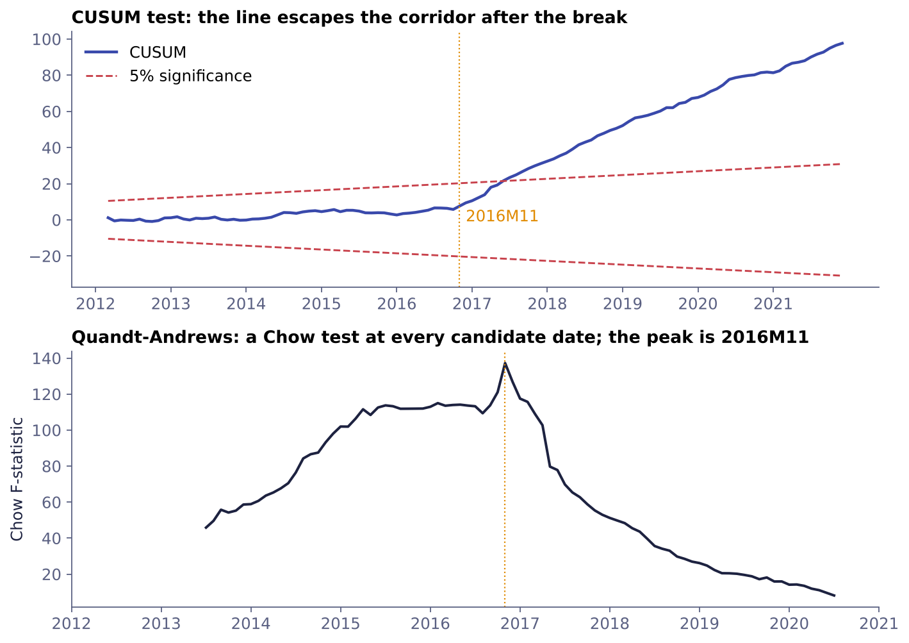

The Day the Rules Changed: Chow, Quandt, CUSUM and the Search for Breaks
Some dates divide history into "before" and "after". For anyone in India, 8 November 2016 is one of them. Overnight, the old ₹500 and ₹1,000 notes stopped being legal tender, and millions of people who had never used a payments app suddenly had a reason to try one.
This post is not about whether that policy was good or bad. It is about a quieter question every econometrician should ask: is the relationship I am estimating the same over the whole sample? We'll meet the economist from Guangzhou who gave us the classic test, and the tests that came after it.
Foundations · Post 7 of 8
1. Omitted variables · 2. Spurious regression · 3. R-squared · 4. Measurement error · 5. Heteroskedasticity · 6. Dummy variables · 7. Structural breaks · 8. Multicollinearity
Data: blog_datasets.xlsx, sheet P7_break · Simulated monthly data, 2012M01–2021M12, 120 observations · EViews program
Gregory Chow: from Guangzhou to Princeton to Beijing
Gregory Chow was born on Christmas Day 1930 in Guangdong, China, and grew up in Guangzhou. He studied at Cornell and earned his PhD at the University of Chicago in 1955. While extending his dissertation work on the demand for automobiles, he faced a practical question: had the relationship changed between two periods? His answer, published in Econometrica in 1960, is the Chow test.
He later taught at MIT and Cornell, worked at IBM's research centre, and joined Princeton in 1970. He also had an unusual second career. He advised the government in Taiwan on economic policy, and later advised mainland China's State Commission for Restructuring the Economic System on market reforms, while helping to train a generation of Chinese economists. In 2014 the American Economic Association named him a Distinguished Fellow. Few econometricians have tested for structural breaks and then helped to cause one.
The data
DIGITAL is the percentage of retail payments in a town made digitally, recorded monthly. The numbers are simulated, but the shape will look familiar. Our regressor is TREND (1 for 2012M01, up to 120 for 2021M12).
A model that looks fine
ls digital c trend
Dependent Variable: DIGITAL
Method: Least Squares
Date: 10/27/26 Time: 21:45
Sample: 2012M01 2021M12
Included observations: 120
==============================================================================
Variable Coefficient Std. Error t-Statistic Prob.
==============================================================================
C 3.416723 0.867505 3.938563 0.0001
TREND 0.458773 0.012444 36.86818 0.0000
==============================================================================
R-squared 0.920123 Mean dependent var 31.17250
Adjusted R-squared 0.919446 S.D. dependent var 16.63673
S.E. of regression 4.721854 Akaike info criterion 5.958806
Sum squared resid 2630.917 Schwarz criterion 6.005264
Log likelihood -355.5284 Hannan-Quinn criter. 5.977673
F-statistic 1359.262 Durbin-Watson stat 0.639778
Prob(F-statistic) 0.000000
==============================================================================
R-squared 0.92. A t-statistic of 37. The digital share grows by about 0.46 percentage points a month. Case closed?
Not quite. The Durbin-Watson of 0.64 tells us the residuals march in long runs rather than bouncing around zero. One straight line is being forced through two different stories.
Test 1: the Chow breakpoint test (1960)
The idea is simple. Fit the model separately before and after the suspected date. If nothing changed, two separate fits shouldn't do much better than one.
where \(k\) is the number of coefficients (2 here: constant and slope).
The Chow test is just a dummy-variable F-test (click to open)
Create a dummy \(D_t = 1\) after the break and estimate
The Chow test is exactly the F-test of \(\gamma = \theta = 0\). The intercept dummy (Post 6) captures a jump in level; the slope dummy captures a change in growth. Under the null both are zero and the model collapses to one line.
View → Stability Diagnostics → Chow Breakpoint Test, enter 2016M11:
Chow Breakpoint Test: 2016M11
Null Hypothesis: No breaks at specified breakpoints
Varying regressors: All equation variables
Equation Sample: 2012M01 2021M12
==============================================================================
F-statistic 137.2203 Prob. F(2,116) 0.0000
Log likelihood ratio 145.6423 Prob. Chi-Square(2) 0.0000
Wald Statistic 274.4407 Prob. Chi-Square(2) 0.0000
==============================================================================
F = 137, p = 0.0000. The relationship broke.
Test 2: what if you don't know the date? Quandt and Andrews
The Chow test needs you to name the date in advance. In 1960, the same year as Chow, Richard Quandt of Princeton suggested a natural alternative: compute the Chow statistic at every possible date and take the largest. The difficulty is that the largest of many F-statistics is not F-distributed; searching makes big values more likely. Donald Andrews of Yale worked out the correct critical values in 1993, and Andrews and Werner Ploberger added "average" and "exponential" versions in 1994.
View → Stability Diagnostics → Quandt-Andrews Breakpoint Test, trimming 15% at each end:
Quandt-Andrews unknown breakpoint test
Null Hypothesis: No breakpoints within 15% trimmed data
Varying regressors: All equation variables
Equation Sample: 2012M01 2021M12
Test Sample: 2013M07 2020M07
Number of breaks compared: 85
==============================================================================
Statistic Value Prob.
==============================================================================
Maximum LR F-statistic (2016M11) 137.2203 0.0000
Maximum Wald F-statistic (2016M11) 274.4407 0.0000
Exp LR F-statistic 64.17346 0.0000
Exp Wald F-statistic 132.7777 0.0000
Ave LR F-statistic 67.17479 0.0000
Ave Wald F-statistic 134.3496 0.0000
==============================================================================
Note: probabilities calculated using Hansen's (1997) method
Without being told anything, the test picks 2016M11, the month of the policy. Here is the whole search, one Chow test per date, with the CUSUM test explained next:

Test 3: CUSUM, the watchman
Brown, Durbin and Evans proposed the CUSUM test in 1975. (That Durbin is James Durbin, of the Durbin-Watson statistic.) Estimate the model on the first few observations, forecast one step ahead, record the scaled forecast error (a "recursive residual"), add one observation, and repeat. Then plot the cumulative sum:
If the model is stable, forecast errors are sometimes positive and sometimes negative, and \(W_t\) wanders around zero inside a corridor. If the model breaks, forecast errors start piling up on one side, and \(W_t\) marches out of the corridor. View → Stability Diagnostics → Recursive Estimates → CUSUM Test.
In our data the CUSUM line stays calm until late 2016, then climbs steadily and crosses the 5% boundary in 2017M06. It needs a few months to accumulate enough evidence, but it gets there without being told the date.
Model the break instead of ignoring it
ls digital c trend post post*(trend-59), where series post = (trend>=59) is 1 from November 2016 onwards:
Dependent Variable: DIGITAL
Method: Least Squares
Date: 10/27/26 Time: 21:45
Sample: 2012M01 2021M12
Included observations: 120
==============================================================================
Variable Coefficient Std. Error t-Statistic Prob.
==============================================================================
C 11.67459 0.690609 16.90477 0.0000
TREND 0.151650 0.020361 7.448248 0.0000
POST 7.233032 0.949379 7.618695 0.0000
POST*(TREND-59) 0.417937 0.027458 15.22120 0.0000
==============================================================================
R-squared 0.976268 Mean dependent var 31.17250
Adjusted R-squared 0.975655 S.D. dependent var 16.63673
S.E. of regression 2.595829 Akaike info criterion 4.778454
Sum squared resid 781.6458 Schwarz criterion 4.871370
Log likelihood -282.7072 Hannan-Quinn criter. 4.816187
F-statistic 1590.665 Durbin-Watson stat 2.049174
Prob(F-statistic) 0.000000
==============================================================================
Now the story is clear:
| Period | Monthly growth in digital share | What changed |
|---|---|---|
| Before Nov 2016 | 0.15 points a month | Slow, steady adoption |
| At Nov 2016 | One-time jump of 7.2 points | The shock itself |
| After Nov 2016 | 0.15 + 0.42 = 0.57 points a month | Adoption almost four times faster |
The single-trend model said 0.46 points a month throughout. That number described no actual period in the data: it was an average of a slow world and a fast world. The Durbin-Watson is now 2.05 and the standard error of the regression has nearly halved, from 4.72 to 2.60.
Even more breaks
What if there are two or three breaks: say, November 2016 and the COVID-19 lockdown in March 2020? Jushan Bai and Pierre Perron (1998, 2003) developed tests and estimators for multiple breaks at unknown dates. EViews: View → Stability Diagnostics → Multiple Breakpoint Test. And if your variable may have a unit root, structural breaks interact with unit root tests in tricky ways; see Chapter 7 of the Unit Root Series.
| Test | Break date | Best for |
|---|---|---|
| Chow (1960) | Known in advance | A policy change with a clear date |
| Quandt-Andrews (1960, 1993) | Unknown, one break | Letting the data find the date |
| CUSUM (Brown-Durbin-Evans 1975) | Unknown | Watching for instability over time |
| Bai-Perron (1998, 2003) | Unknown, several breaks | Long samples with several regimes |
Two cautions
- Know your date before you look, or pay for searching. If you scan the data, pick the date with the biggest jump and then run a Chow test, the usual p-value is far too optimistic. Use Quandt-Andrews instead.
- A break is a fact, not an explanation. The test says something changed in November 2016. It doesn't say why. Smartphone prices, a new app or a festival season could all line up with the same date.
The lesson
A regression that fits beautifully over ten years can still be wrong about every single one of them. Before trusting a slope, ask whether the world stayed the same long enough for one slope to make sense.
Something to think about
The COVID-19 lockdown began in March 2020, inside our sample. Would you test for a second break? If you found one, how would you decide whether it was a permanent change or a temporary blip? Tell me in the comments.